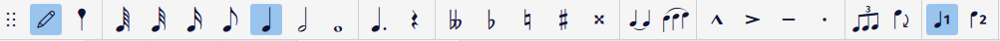
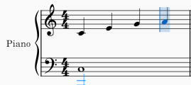

A blank staff is not composing; it is a waiting room. The first real skill is getting a note out of your head and onto the page, quickly enough that the idea survives the trip. MuseScore gives you three ways to do it, and they are not equal. This chapter shows all three and then argues, firmly, for the one you should learn first.
2.1Three ways in
By mouse. You can click notes onto the staff — pick a duration in the toolbar, then click where the note goes. It feels natural for exactly ten minutes and then becomes the slowest possible method, because every note is a small act of aiming. Reach for the mouse to drag and select, rarely to enter.
By MIDI keyboard. If you own a MIDI keyboard, plug it in (USB is plug-and-play on all three operating systems) and MuseScore will accept notes played on it. This is wonderful for capturing a chord voicing you can play but cannot yet spell, and we will use it later. But it needs hardware, and it needs you to already play a little piano, so it is not the foundation.
By computer keyboard. You type the letter name of each pitch — literally press C for a C — after setting a duration with the number keys. No aiming, no hardware, both hands on the keys you already have. This is the method to learn first and the method this book assumes. Everything below is about it.
2.2Note input mode
Entering notes is a distinct mode. Outside it, the letter keys select and navigate; inside it, they place pitches. You toggle the mode with a single key.
Press N. The note-input toolbar activates, and this strip of controls is your dashboard for everything you are about to type.

You do not need every button in Figure 2.1 yet — most belong to later chapters. Four regions matter now, left to right: the durations (choose how long the next note lasts), the accidentals (sharp, flat, natural), the rest button, and the voices at the far right, which we leave on Voice 1. The durations are the ones your fingers will find blind, because they map to the number row.
2.3Duration first, then pitch
The order is the thing to internalize, because it is backwards from how you might guess: you set the duration, and only then type the pitch. The duration is a mode that persists — set it to a quarter note and every note you type is a quarter until you change it. So the rhythm of typing is: press a number to choose a length, press letters to lay down notes of that length, press another number when the length changes.
The number keys are:
| Key | Duration |
|---|---|
| 1 | 64th note |
| 2 | 32nd note |
| 3 | 16th note |
| 4 | eighth note |
| 5 | quarter note |
| 6 | half note |
| 7 | whole note |
(They run short-to-long as the numbers climb — 5 is the everyday quarter note and worth memorizing first. What these durations mean rhythmically is Chapter 6; here we only need them to make notes appear.) A period, ., dots the current duration; 0 enters a rest of the current length.
With a duration chosen, type a letter A–G and the note appears. MuseScore places it at the octave nearest the previous note, so a melody that never leaps more than a few steps needs no octave management at all — you just type the letters. When it does leap far, nudge it: Ctrl+↑ and Ctrl+↓ move the selected note by a whole octave, and the plain ↑/↓ arrows move it by a half step.
2.4The input cursor
While you are in note-input mode, a blue marker shows where the next note will land. Watch it, not the toolbar — it is the cursor, and it tells you your place in time.

Each note you enter fills the cursor’s position and advances it by the current duration, as in Figure 2.2. When a measure fills, the cursor jumps to the next one; MuseScore will not let you overfill a bar. If you type a wrong pitch, it is already selected — just press ↑/↓ to fix it, or the correct letter to overwrite, without leaving the mode. To back up, press Backspace, which deletes the last note and returns the cursor to it.
When you are done, press N again — or Esc — to leave note-input mode. Now the letters navigate again, and Space plays the score back so you can hear what you typed.
2.5A first line
Put it together. From a new or open score, press N, then 5 for quarter notes, then type:
C D E F G A B C
Eight quarter notes climb the staff. Press Esc to leave the mode and Space to hear them. That rising line is a C-major scale — the raw material of Chapter 7 — and you entered it with fifteen keystrokes and no mouse. This is the whole loom on which the rest of the book is woven: duration, then letters, then listen. Everything else is elaboration.